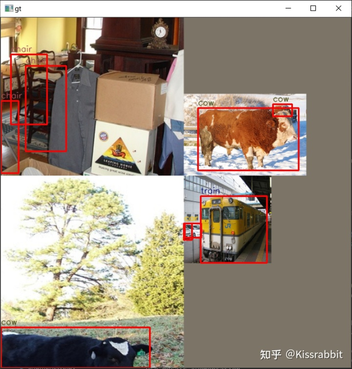

Yolov3+spp

文章目录
目前来看，目标检测领域的baseline几乎已经被RetinaNet工作统治了，很多增量式的改进也都是在RetinaNet的基础上做的，往往Mask R-CNN和Faster R-CNN也会用上，毕竟是双阶段检测器的经典之作。
- RetinaNet的网络十分简洁，训练起来也没有太tricky的东西。
- RetinaNet的训练时间很短，通常只需要在COCO上训练12个epoch，数据增强也只需要使用随机水平翻转即可。
- YOLOv3往往需要在COCO上训练超过200个epoch，并且使用包括随机水平翻转、颜色扰动、随机剪裁和多尺度训练在内等大量的数据增强手段。
- 在解决实际问题时，YOLO系列更加受欢迎，毕竟在实际任务里，“实时性”是个很重要的指标，这一点恰恰是RetinaNet的劣势。YOLO性能强、速度快、计算量也要远小于RetinaNet，因此更适合用在实际部署中。
YOLO-v3:
更好的主干网络：DarkNet-53
FPN与多级检测方法，在YOLOv2上做增量。
正负样本的匹配，损失函数均在v2中讲解。
结论：对小目标的检测能力显著提升。
更好的主干网络：
YOLOv3的第一处改进便是换上了更好的backbone网络：DarkNet53。
- 新的网络使用了更多的卷积—53层卷积
- 同时，添加了残差网络中的残差连结结构，以提升网络的性能。
在ImageNet数据集上，DarkNet53的top1准确率和top5准确率几乎与ResNet101和ResNet152持平，但速度却显著高于后两者。
更厉害的数据增强：Mosaic Augmentation
可以显著提升检测器的性能，尤其是小目标的性能。其核心思想就是随机将4张图像拼接在一起，如图所示。

举例：
假定输入图像是640x640，我们首先准备一个1280x1280的空白图像，依次将图像的最长边缩放到640，短边相应缩放。随机选择一个中心点，依次将四张图片拼接上去，最后将这张1280x1280的图像调整到640x640。
大体上来看，我们相当于将一张原本640x640的图像，给调整至320，因此，图像中的目标都被缩小了，那么不难想到，马赛克增强可以有效提升小目标检测的性能。
如果我们全程都采用马赛克增强，必然会使得模型对大目标的响应下降。
为了缓解这一问题：
- 我们在缩放每张图像的时候，缩放比例可以有所调整，默认为1，即将最长边缩放至640，最大的缩放比例为2，如此一来，图像的比例最终不会有变化，这在一定程度上可以缓解马赛克增强带来的负面效应。
- 另一种策略就是在训练过程中，我们使用50%的概率来决定当前是否使用马赛克增强。
马赛克数据增强的优点：
- 增加数据多样性
- 增加目标个数
- BN一次性统计多张图片参数—变相增加batch大小
FPN与多级检测方法：
随着网络深度的加深，降采样操作的增多，细节信息不断被破坏，致使小物体的检测效果逐渐变差，而大目标由于像素较多，仅靠网络的前几层还不足以使得网络能够认识到大物体（感受野不充分），但随着层数变多，网络的感受野逐渐增大，网络对大目标的认识越来越充分，检测效果自然会更好。
SSD：使用不同大小的特征图来检测不同尺度的目标 分而治之
“分而治之”方法的内核不是FPN，而是多级检测。
YOLOv3的关键改进便是使用了FPN结构与多级检测方法。YOLOv3在3个尺度上去进行预测，分别是经过8倍降采样的特征图C3、经过16倍降采样的特征图C4和经过32倍降采样的特征图C5。

YOLOv3在每个网格处放置3个先验框。由于YOLOv3一共使用3个尺度（feature_map的尺度），因此，YOLOv3一共设定了9个先验框，这9个先验框仍旧是使用kmeans聚类的方法获得的。
每个尺度的网格都放置3个先验框，且每个先验框的预测仍旧是包括置信度、类别和位置参数（换言之，输出共包括objectness+class+bbox三部分输出），因此，每个尺度所预测的张量的通道数都是3×(1+C+4)。
文章作者 杨浩伟
上次更新 2023-02-03